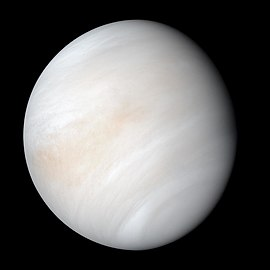
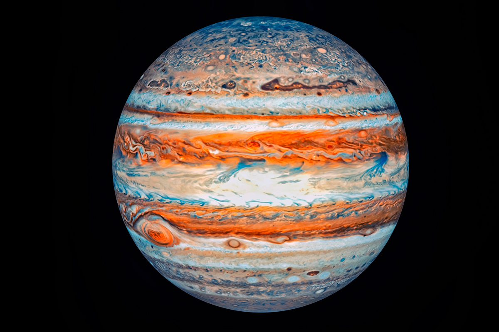
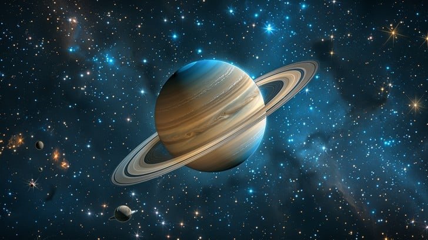
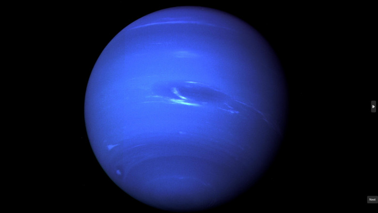

| Imagine |
Denumire |
Nr.Sateliti |
Masa |
Volum |
Aria Suprafetei |
Densitate |
Temperatura la suprafata |
 |
Mercur |
0 |
3,3022x1023 kg |
60,83 mrd.km3 |
74,8 mil. km2 |
5.400 kg/m3 |
Min -183.15 °C Max 426.85 °C |
|  |
Venus |
0 |
4,8675 x 1024kg |
9,2843 x 10 11 |
460.200.000 km2 |
5,243 g/m 3 |
Medius 464 °C |
|
Pamant |
1 |
5,97237x1024kg |
1,08321x1012km3 |
510.100.000 km2 |
5,514 g/cm3 |
Min -89.2 °C Medie 14.9 °C Max 56.9 °C |
 |
Marte |
2 |
6,4171 x 1023kg |
1,6318 x 1011km3 |
144.400.000 km2 |
3,9335 g/cm3 |
Min -143 °C Medie -63°C Max 35 °C |
|  |
Jupiter |
67 |
1,8982 x1027kg |
1,4313 x1015km3 |
6,142 x10 km2 |
1.326 kg/m3 |
Min -108 °C |
|  |
Saturn |
83 |
5,6834 x1026kg |
8,2713 x1010km3 |
4,27 x10 km2 |
0,687 g/cm3 |
Medie -139 °C |
 |
Uranus |
27 |
(8,6810±0,0013)x1025 kg |
6,833 x1013 km3 |
8,1156 x 109km2 |
1,27 g/cm3 |
Min. -197 °C |
|  |
Neptun |
14 |
1,0243 x 10 x1026 kg |
6,254 x1013km3 |
7,6195 x109km2 |
1,64 g/cm3 |
-201.15 °C |
 |
Pluto |
Obsolete |
Obsolete |
Obsolete |
Obsolete |
Obsolete |
Obsolete |